Instituto Xavier
Professor Charles Xavier
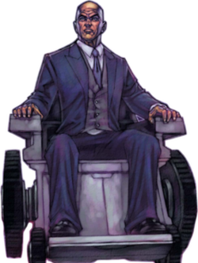
História:Charles Xavier é um mutante dotado de vastos poderes telepáticos, especialista em biologia e sociologia mutante e o fundador dos Fabulosos X-Men como Professor X. Com imenso apoio da Dra. Moira MacTaggert, sua vida se dedicou a realizar seu sonho de coexistência pacífica entre mutantes e humanos.
Poder: O Professor Charles Xavier é um dos mutantes mais poderosos do Universo Marvel, reconhecido como um telepata de nível ômega. Suas habilidades incluem leitura/controle mental, projeção astral, criação de ilusões, manipulação de memórias e rajadas psíquicas. Ele pode atuar globalmente com esforço, muitas vezes amplificando seu poder através do computador Cérebro.
Logan/Wolverine

História: O homem chamado Logan vive inúmeras vidas como resultado de sua mutação regenerativa, antes de perder suas memórias durante um experimento cruel. Mas ele encontra um novo lar ao se juntar às fileiras dos X-Men como Wolverine.
poder: O Wolverine possui como poderes principais um fator de cura regenerativo extremamente rápido, sentidos animais aguçados (olfato, audição, visão) e garras retráteis no antebraço. Seu esqueleto foi revestido com adamantium, um metal indestrutível, aumentando sua força e durabilidade. Ele também possui envelhecimento retardado, imunidade a doenças/toxinas e agilidade sobre-humana.
Ororo Munroe/ Tempestade
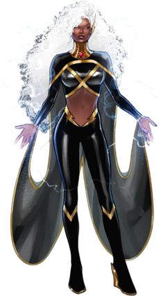
História: Descendente de uma longa linhagem de sacerdotisas africanas, Tempestade pertence a uma subespécie fictícia de humanos nascidos com habilidades sobre-humanas, conhecidos como mutantes. Ela é capaz de controlar o clima e a atmosfera e é considerada uma das mutantes mais poderosas do planeta.
poder: Poder: A Tempestade é uma mutante de nível Ômega dos X-Men com poder de atmocinese, permitindo manipular o clima, ventos, raios e pressão atmosférica em escala planetária. Capaz de voar, gerar relâmpagos, criar vácuos e congelar ambientes, ela também possui elo místico com a natureza e resistência a extremos.
Fera
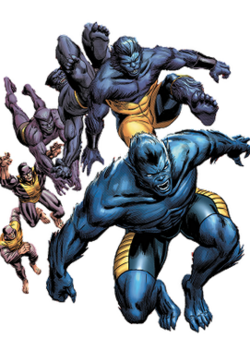
História: Ele é um jovem cientista com grandes pés e mãos trabalhando para a Divisão X de mutantes da CIA, ao qual se unem o Professor Xavier (James McAvoy) e Magneto (Michael Fassbender). Quando se injeta com um antídoto que iria suprimir sua mutação, acaba sofrendo efeitos colaterais e ganhando a pele e pêlos azuis do Fera.
poder:O Fera (Hank McCoy) da Marvel é um mutante com intelecto de nível genial, força sobre-humana, agilidade, velocidade e resistência física aprimoradas, além de sentidos aguçados. Sua mutação confere aparência simiesca azul, garras afiadas e habilidades acrobáticas superiores.
Scott Summers/Ciclope
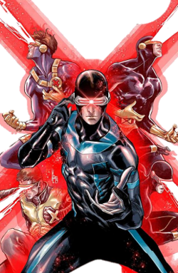
História: Charles Xavier o tornou um de seus alunos e o primeiro X-Men. Ele logo se tornou o líder de campo da equipe, posição que ele tradicionalmente ocuparia durante anos. Sua devoção e dedicação ao ideal de Xavier sempre foi inquestionável, fazendo com que ele sempre se sacrificasse em nome da equipe.
poder:Ciclope (Scott Summers), líder dos X-Men, dispara rajadas ópticas concussivas de cor vermelha (força cinética) a partir de seus olhos, com poder devastador. Devido a traumas, ele não controla o poder, necessitando de visor de quartzo-rubi. É um estrategista mestre e excelente combatente corpo a corpo.
Jean Grey
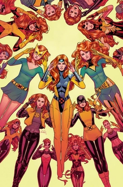
História: Jean Grey é uma mutante com poderes psiônicos, inicialmente limitada à telecinesia e posteriormente capaz também de telepatia.
poder:Jean Grey é uma das mutantes mais poderosas do universo Marvel, classificada como nível ômega. Ela possui telepatia e telecinese extremas, permitindo ler/manipular mentes, voar, mover matéria e criar escudos. Ao se fundir à Força Fênix, seus poderes cósmicos tornam-se quase ilimitados, incluindo manipulação de energia, ressurreição e reestruturação molecular.
Kurt Wagner/Noturno
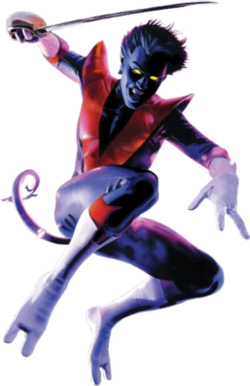
História: Originalmente, ele era originário de uma pequena vila chamada Witzeldorf, no estado alemão da Baviera . Em 1994, foi revelado que Noturno era filho da supervilã mutante Mística e, por muitos anos após um arco de história de 2003, acreditou-se que ele havia nascido de um breve caso dela com Azazel .
Poder:Noturno, mutante dos X-Men, possui a habilidade principal de se teletransportar através de uma dimensão de enxofre, movendo a si mesmo e o que toca. Seus poderes incluem agilidade sobre-humana, cauda preênsil, capacidade de escalar e invisibilidade em sombras profundas.
Kitty Pryde/Shadowcat
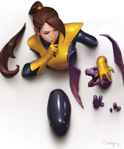
Historia: A Gata Negra é uma ladra experiente e uma acrobata habilidosa. Ela também possui amplo conhecimento do submundo do crime. Graças aos seus poderes de azar, concedidos pelo Rei do Crime, Felicia pode afetar negativamente a sorte de seus inimigos.
poder: Kitty Pryde (Lince Negra) é uma mutante da Marvel com o poder de intangibilidade e fazeamento, permitindo que ela atravesse matéria sólida, energia e campos físicos ao mover seus átomos entre os espaços moleculares. Ela pode se tornar intocável, andar no ar, transportar outras pessoas e, com o Vórtice Negro, atravessar planos de existência.
Rogue
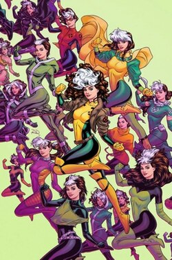
Historia: Rogue é uma adolescente insegura, que apenas possui poderes de absorção. Quando descobre seus poderes Mística a engana e ela fica no lado da Irmandade, mas ao descobrir a verdade vai para a equipe X-Men, tem uma quedinha pelo mutante Ciclope e foi a peça chave para a liberdade de Apocalipse.
poder: A Vampira possui a habilidade mutante de absorver temporariamente energia vital, memórias, habilidades e superpoderes através do toque pele a pele. Toques longos podem causar desmaios ou cópia permanente, enquanto toques curtos geram fraqueza. Ela frequentemente retém superforça, voo e invulnerabilidade de absorções passadas
Evan Daniels/Spyke
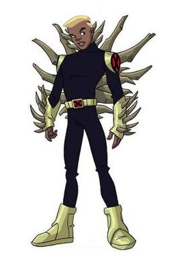
História: Spyke é um calouro do ensino médio e possui a habilidade mutante de projetar espinhos de seu corpo. Nascido em Nova York, filho de pai desconhecido e Vivian Daniels, ele é sobrinho de Tempestade dos X-Men.
poder: Spyke tem o poder mutante de gerar, estender e retrair espinhos ósseos afiados de seu corpo (braços, costas), usados para combate corpo a corpo ou lançados como projéteis. Ele também possui fator de cura, uma mutação secundária de armadura óssea e precisa repor o cálcio bebendo leite.
Bobby Drake/Homem de Gelo
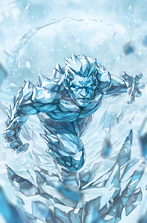
Historia: O Homem de Gelo tem usado seus poderes de maneiras inovadoras, incluindo a capacidade de existir como um gás senciente. Ele descobriu essa habilidade enquanto lutava contra os Filhos da Cripta, quando eles atacaram a Mansão.
Poder: O Homem de Gelo (Bobby Drake) é um mutante de nível Ômega na Marvel, com poder ilimitado sobre a criocinese e termocinese. Ele manipula a umidade para criar gelo, transforma seu corpo em gelo orgânico (resistente e regenerável), atinge o zero absoluto, gera clones, teletransporta-se por moléculas de água e pode congelar áreas globais
Amara Aquilla/Magma
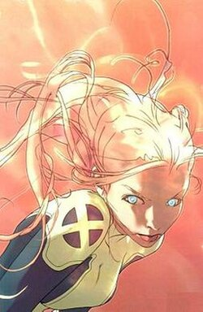
História: Magma veio do país fictício Nova Roma, uma colônia da República Romana supostamente fundada pouco depois da morte de Júlio César em 44 a.C. A colônia estava escondida no Brasil atual e era governada até recentemente pela mutante imortal e feiticeira Selene. Amara era filha de Lucius Antonius Aquilla.]
Poder: Amara Aquilla, a Magma dos X-Men, é uma mutante brasileira com poderosas habilidades geotérmicas e geocinéticas. Ela consegue controlar placas tectônicas, causar terremotos, invocar lava/magma e gerar calor intenso, além de ser imune a temperaturas extremas e capaz de se regenerar em contato com a terra.
Rahne Sinclair / Wolfsbane
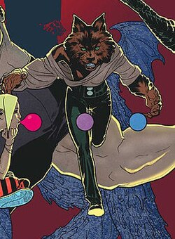
História: Ela nasceu fora do matrimônio, e sua mãe faleceu ao dar-lhe à luz. Ao invés de ser colocada para adoção, Rahne foi criada pelo Reverendo Craig, um duro ministro presbiteriano da filosofia do fogo-e-enxofre, que tinha feito da salvação da alma da mãe de Rahne um problema próprio.
Poder: Wolfsbane (Lupina), da Marvel, é uma mutante com a capacidade de se transformar voluntariamente em uma loba completa ou em uma forma transicional humanoide (licantropia). Ela possui sentidos aguçados, velocidade, força sobre-humana, garras e presas afiadas para combate, além de um fator de cura regenerativo.
Tabitha Smith
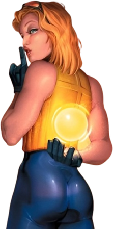
Tabitha vivia em um trailer em Jonestown, Pensilvânia. Acreditava que sua mãe estava morta e vivia com o pai bêbado e desempregado, e piorou ainda mais quando seu poder mutante surgiu aos 13 anos. Seu pai tinha vergonha da filha mutante, era vitima de maus tratos físicos até que fugiu e passou a morar na rua.
Poder: Tabitha Smith, também conhecida como Dinamite (Boom-Boom), é uma mutante da Marvel capaz de gerar psionicamente orbes amarelos de plasma puro que detonam com força explosiva e concussiva. Ela controla o tamanho das "bombas-relógio" (de bolinhas a bolas de praia) e pode reabsorvê-las, sendo imune aos próprios efeitos.
.jpeg)